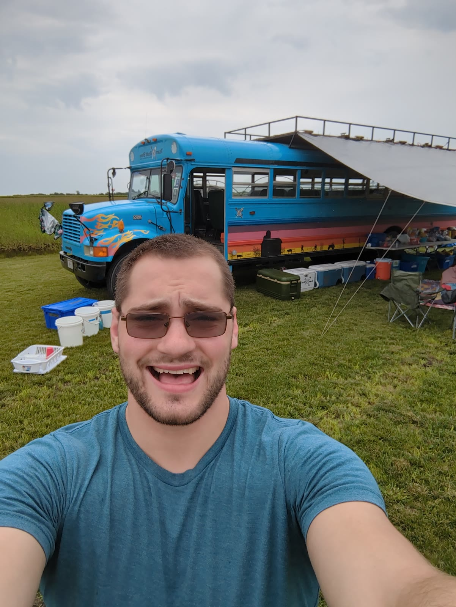
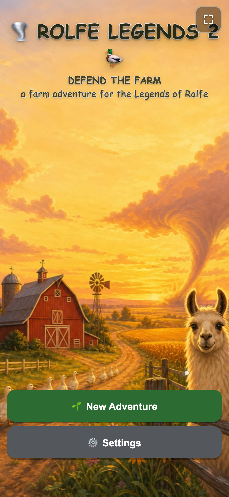
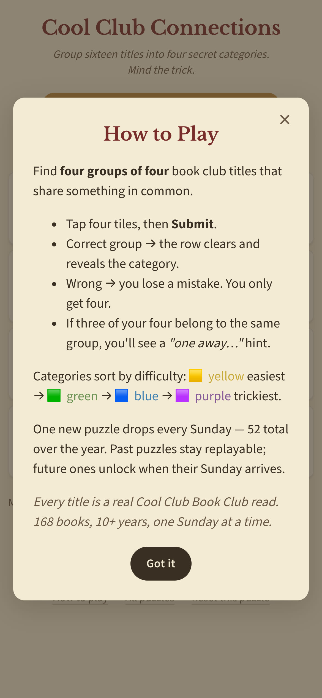
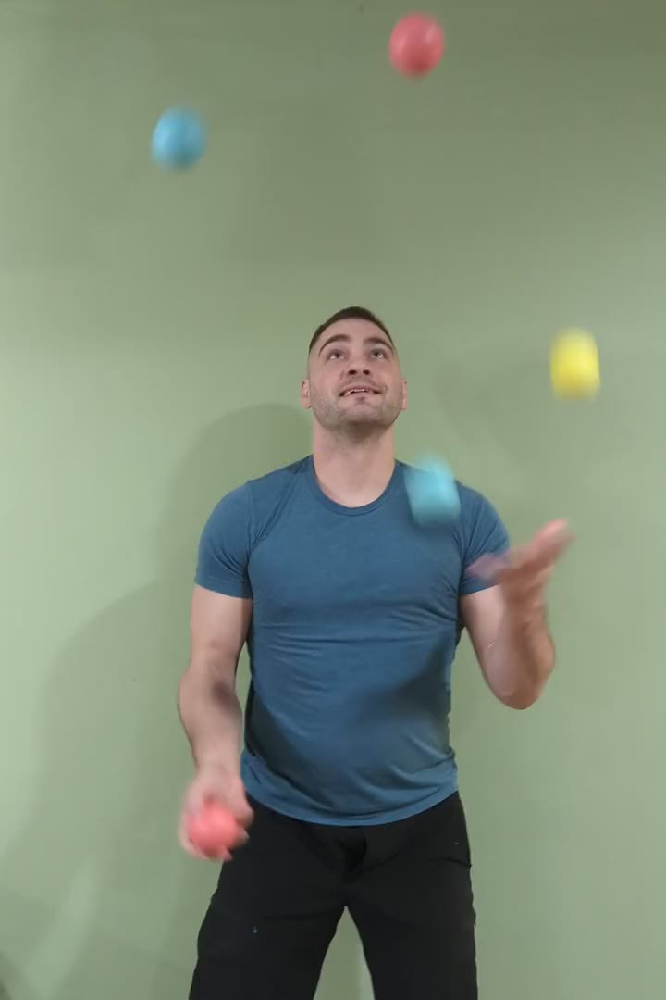
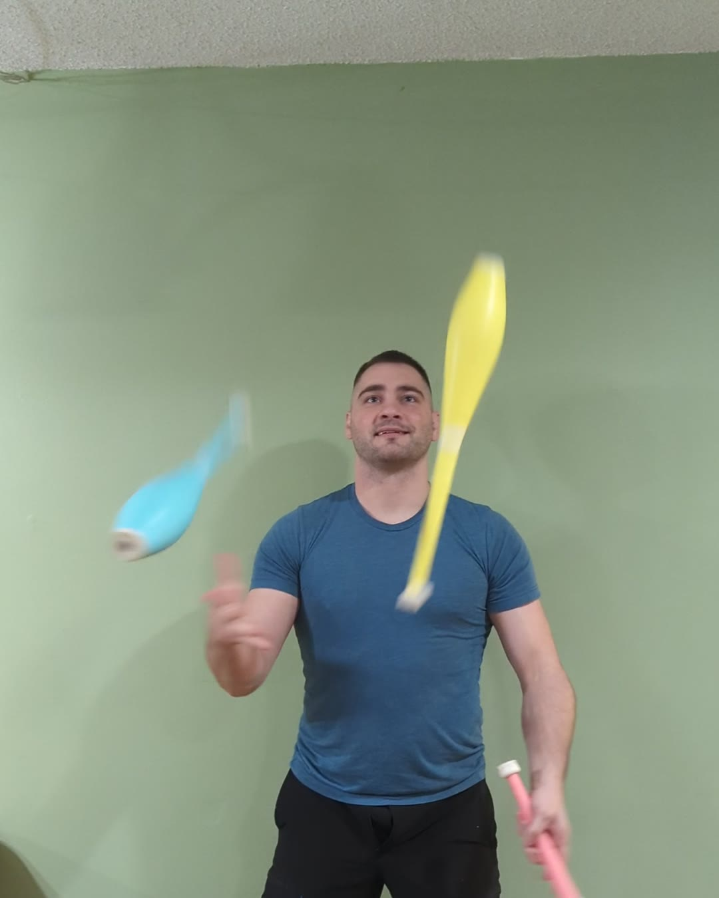

James Moran Des Moines, Iowa
Engineer. Analyst. Builder. Human.
Engineer turned analyst turned AI builder. Four things in the air, none dropped.
Hiring, or building something real? Email me with opportunities

The leap
In 2022 I left the known engineering path. I moved home to Iowa to be near family and friends, retrained in data analytics, and started over at the bottom of a new field.
It was a risk and I was uncertain about most of it. I was certain about one thing: some balls you do not put down to catch a career. The people, and the joy, stayed in the air.
Data in service of health
I joined a scrappy pharma-marketing startup as the fifteenth hire and juggled whatever it needed next: client services, then ad operations, then business intelligence, building the process from scratch at every stop.
We grew it into a real company, and Real Chemistry, a major healthcare marketing firm, acquired it. Along the way I rebuilt our reporting from a disorganized state to a valuable and controlled system.
Leadership's words, not mine.
- Hire number
- 0
- Media data sources unified
- ~0
- Annual media programs measured
- eight figures
The AI era
Today I am fixated on AI and what it makes possible, and I build with it every day. At work I built my team's analytics workspace end to end, in three planes: a governed SQL codebase over bronze, silver, and gold tiers in Snowflake (about twenty media sources behind eight-figure pharma media programs), a knowledge layer that documents the data and the brands in plain text, and an agent layer.
In that agent layer, Claude Code runs the QA suites and the reporting rituals as skills, under rules, a compliance hook, and a permission sandbox, reading the same files the analysts read. One-off queries became a shared, version-controlled library that humans and agents both use.
At home, the same patterns run my life. The proof is next.
All four in the air.

Things I've built
Rolfe Legends 2: Defend the Farm
A roguelike deckbuilder made as a gift for my nephews, the sequel they asked for after the first one. They play as themselves and defend the family farm across three acts, from the far fields at morning to the big twister at night. Family members run the shop, the rest stop, and the treasure deliveries.
Tuned hard on purpose: about a 30% win rate per hero, verified by simulating hundreds of full runs, so every sung victory anthem is earned. Built with AI pair-programming, a DOM-free engine, and 1,390 unit tests. It installs on a phone and plays offline.
2 heroes · 3 acts · 40+ cards · 25+ enemies · 15 relics · original art and music

A book club, ten years in
Ten years ago I started a book club. It still meets every week, 177 books deep. I build the things that run it: a weekly voting system with a dashboard to pick the next read, and a connections game spun from our entire reading history.
An AI second brain
A markdown vault plus a Claude Code assistant running my actual life: projects, knowledge, journal, people. Captured, cross-linked, queryable. The same patterns as the work platform, life-sized. Plain text, git-backed, built to last decades.
The analytics workspace
The one from the previous chapter: data, knowledge, and agents in one version-controlled repo. The work-sized version of the same idea.

Beyond work
I commit deeply, and I stay for years.
- Juggling. Club president at Iowa State for three years. St. Louis Jugglefest club-passing champion, 2018. The title page is literal.
- Brazilian jiu-jitsu. Years on the mats. Tournament gold, 2021.
- Books. One club, every week, more than ten years.
- Languages. Spanish and Russian. I host a weekly Russian conversation meetup in Des Moines.
- Mentoring. Big Brothers Big Sisters for three years. FIRST Lego League planning committee.

James Moran · Des Moines, Iowa
If you are hiring, or building something real, email me with opportunities. Or read the one-page CV.